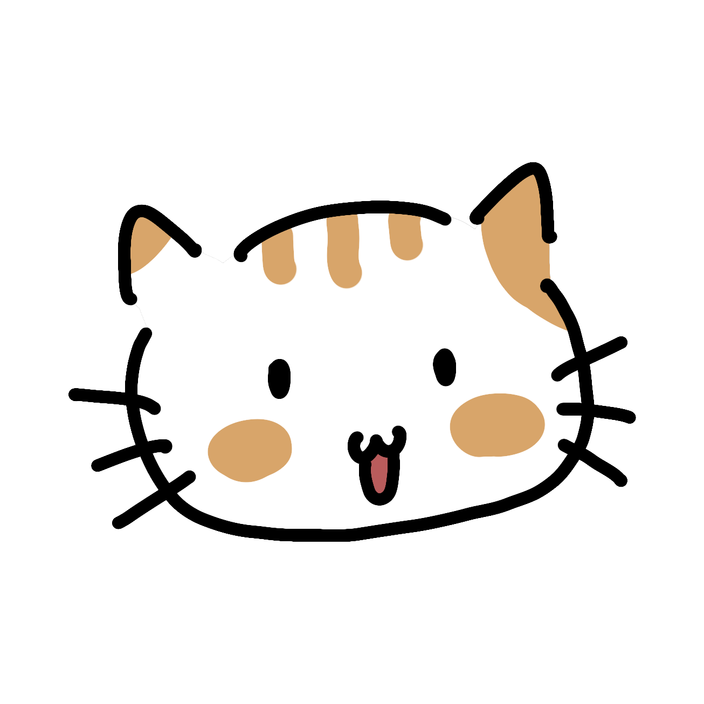

친구들끼리 가볍게 쓰는 할 일 관리 앱. 카테고리, 캘린더, 습관, 일기, 그리고 친구의 오늘까지 한 곳에서.
할 일을 카테고리별로 나눠서 관리하고, 드래그로 순서나 카테고리를 바로 옮길 수 있어요. 요일이나 날짜마다 반복하는 할 일은 그날 알아서 떠요.
날짜별 할 일이 캘린더 칸 안에 바로 보이고, 공휴일도 자동으로 표시돼요.
매일 하는 습관을 체크하고 연속 달성일과 활동 지도로 한눈에 확인해요.
날짜별로 자유롭게 쓰는 나만의 일기장, 그리고 친구 한 명과 함께 쓰는 교환일기까지.
아이디·닉네임으로 검색하거나 친구 코드로 친구를 추가하면 서로 자동으로 연결돼요. 캘린더로 날짜를 넘겨가며 친구의 할 일을 볼 수 있어요 (비공개로 해둔 카테고리·할 일은 제외).
친구 화면에서 바로 1:1 채팅을 나눌 수 있어요.
TODOon-Setup.exe를 받아요.Windows가 "알 수 없는 게시자" 경고를 띄우면 추가 정보 → 실행을 눌러주세요. 서명되지 않은 개인 배포 앱이라 나오는 정상적인 안내예요. 크롬이나 엣지가 다운로드 자체를 "위험한 파일"이라며 막으면, 화면 아래 다운로드 알림 옆의 ⌄ 또는 ... 버튼 → 계속 유지/다운로드 유지를 눌러주세요. 서명 인증서가 없는 개인 배포 프로그램이라 생기는 오탐이에요. 그래도 막히면 압축파일(zip)로 받아보세요. 실행 파일이 아니라 이런 차단이 덜해요 (압축을 푼 뒤 todo_on.exe를 실행하면 돼요). 이후 새 버전이 나오면 앱 안의 업데이트 알림에서 지금 업데이트를 누르는 것만으로 자동으로 받아서 설치돼요.
TODOon-버전.apk)을 받아요.새 버전이 나오면 앱 안의 업데이트 알림에서 지금 업데이트를 누르면 앱이 직접 받아서 설치 화면을 띄워줘요. 업데이트만 누르면 끝 (처음 한 번은 "출처를 알 수 없는 앱" 허용이 필요해요, 기존 데이터는 그대로 유지돼요). v1.6.48 이하에서는 이 페이지에서 한 번만 직접 받아 설치해주세요.